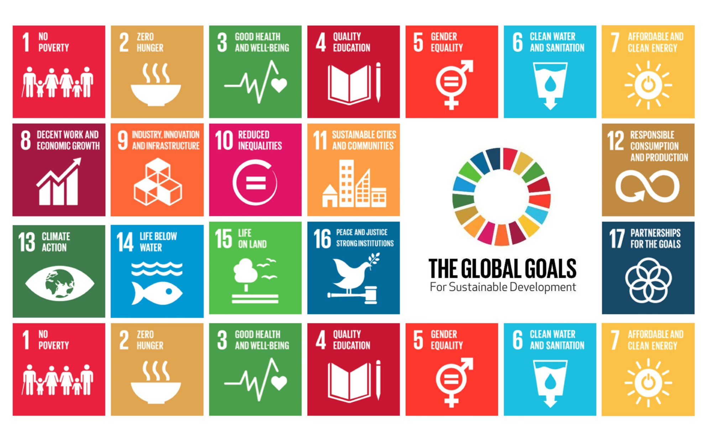

Our Initiative
Our aim is to try and resolve environmental problems and foster peace and harmony. Our motive involves the inclusion and implementation of SDGs in rural areas as well. The era of environmental stability draws to a close, thanks to urbanization but if we are to survive, one must awaken.
We must prevent the all-out resource war where climatic catastrophes will complement the massacre of millions.
ABOUT US

Arham Jain
Founder
Arham is an 8th-grade student and an avid reader who likes exploring new things. His interests lie in mythologies, history, and astronomy.
Ashmit Konar
Co-Founder
Ashmit studies in the 8th grade and also likes to read. He enjoys playing the keyboard and basketball in his free time.